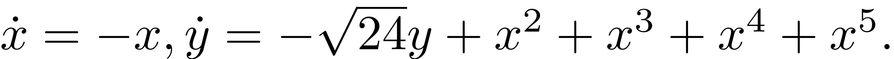
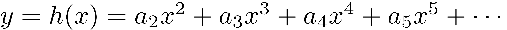
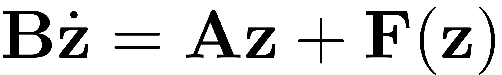
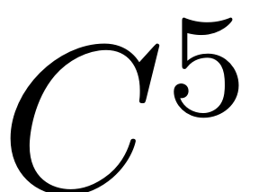

<!DOCTYPE html
  PUBLIC "-//W3C//DTD HTML 4.01 Transitional//EN">

<html><html><body><div class="banner"><a href="../../../index.html"></a></div></body></html><head>
<meta content="text/html; charset=utf-8" http-equiv="Content-Type"/>
<!--
This HTML was auto-generated from MATLAB code.
To make changes, update the MATLAB code and republish this document.
      --><title>Benchmark for computing a 1D SSM</title><meta content="MATLAB 9.14" name="generator"/><link href="http://purl.org/dc/elements/1.1/" rel="schema.DC"/><meta content="2023-08-31" name="DC.date"/><meta content="Benchmark_1D_SSM.m" name="DC.source"/><style type="text/css">
html,body,div,span,applet,object,iframe,h1,h2,h3,h4,h5,h6,p,blockquote,pre,a,abbr,acronym,address,big,cite,code,del,dfn,em,font,img,ins,kbd,q,s,samp,small,strike,strong,tt,var,b,u,i,center,dl,dt,dd,ol,ul,li,fieldset,form,label,legend,table,caption,tbody,tfoot,thead,tr,th,td{margin:0;padding:0;border:0;outline:0;font-size:100%;vertical-align:baseline;background:transparent}body{line-height:1}ol,ul{list-style:none}blockquote,q{quotes:none}blockquote:before,blockquote:after,q:before,q:after{content:'';content:none}:focus{outine:0}ins{text-decoration:none}del{text-decoration:line-through}table{border-collapse:collapse;border-spacing:0}

html { min-height:100%; margin-bottom:1px; }
html body { height:100%; margin:0px; font-family:Arial, Helvetica, sans-serif; font-size:10px; color:#000; line-height:140%; background:#fff none; overflow-y:scroll; }
html body td { vertical-align:top; text-align:left; }

h1 { padding:0px; margin:0px 0px 25px; font-family:Arial, Helvetica, sans-serif; font-size:1.5em; color:#d55000; line-height:100%; font-weight:normal; }
h2 { padding:0px; margin:0px 0px 8px; font-family:Arial, Helvetica, sans-serif; font-size:1.2em; color:#000; font-weight:bold; line-height:140%; border-bottom:1px solid #d6d4d4; display:block; }
h3 { padding:0px; margin:0px 0px 5px; font-family:Arial, Helvetica, sans-serif; font-size:1.1em; color:#000; font-weight:bold; line-height:140%; }

a { color:#005fce; text-decoration:none; }
a:hover { color:#005fce; text-decoration:underline; }
a:visited { color:#004aa0; text-decoration:none; }

p { padding:0px; margin:0px 0px 20px; }
img { padding:0px; margin:0px 0px 20px; border:none; }
p img, pre img, tt img, li img, h1 img, h2 img { margin-bottom:0px; }

ul { padding:0px; margin:0px 0px 20px 23px; list-style:square; }
ul li { padding:0px; margin:0px 0px 7px 0px; }
ul li ul { padding:5px 0px 0px; margin:0px 0px 7px 23px; }
ul li ol li { list-style:decimal; }
ol { padding:0px; margin:0px 0px 20px 0px; list-style:decimal; }
ol li { padding:0px; margin:0px 0px 7px 23px; list-style-type:decimal; }
ol li ol { padding:5px 0px 0px; margin:0px 0px 7px 0px; }
ol li ol li { list-style-type:lower-alpha; }
ol li ul { padding-top:7px; }
ol li ul li { list-style:square; }

.content { font-size:1.2em; line-height:140%; padding: 20px; }

pre, code { font-size:12px; }
tt { font-size: 1.2em; }
pre { margin:0px 0px 20px; }
pre.codeinput { padding:10px; border:1px solid #d3d3d3; background:#f7f7f7; }
pre.codeoutput { padding:10px 11px; margin:0px 0px 20px; color:#4c4c4c; }
pre.error { color:red; }

@media print { pre.codeinput, pre.codeoutput { word-wrap:break-word; width:100%; } }

span.keyword { color:#0000FF }
span.comment { color:#228B22 }
span.string { color:#A020F0 }
span.untermstring { color:#B20000 }
span.syscmd { color:#B28C00 }
span.typesection { color:#A0522D }

.footer { width:auto; padding:10px 0px; margin:25px 0px 0px; border-top:1px dotted #878787; font-size:0.8em; line-height:140%; font-style:italic; color:#878787; text-align:left; float:none; }
.footer p { margin:0px; }
.footer a { color:#878787; }
.footer a:hover { color:#878787; text-decoration:underline; }
.footer a:visited { color:#878787; }

table th { padding:7px 5px; text-align:left; vertical-align:middle; border: 1px solid #d6d4d4; font-weight:bold; }
table td { padding:7px 5px; text-align:left; vertical-align:top; border:1px solid #d6d4d4; }


  </style></head><body><div class="content"><h1>Benchmark for computing a 1D SSM</h1><!--introduction--><!--/introduction--><p>Consider the following example studied in [1]</p><p></p><p>We take the first mode as master mode and calculate the SSM using graphstyle. The reduced dynamics is already linear and the expansion will be of the following</p><p></p><p>where [1]</p><p></p><p>[1] Haller, G., &amp; Ponsioen, S. (2016). Nonlinear normal modes and spectral submanifolds: existence, uniqueness and use in model reduction. <i>Nonlinear dynamics</i>, <i>86</i>(3), 1493-1534.</p><pre class="codeinput">clear <span class="string">all</span>;
</pre><p>Build model</p><p>In SSMTool, the setup of first-order autonomous systems is given as follows</p><p></p><pre class="codeinput">[A,B,F] = build_model();
</pre><p>Dynamical system setup</p><pre class="codeinput">DS = <a href="../../../Library/DynamicalSystem/DynamicalSystem.html">DynamicalSystem</a>();
set(DS,<span class="string">'A'</span>,A,<span class="string">'B'</span>,B,<span class="string">'fnl'</span>,F);
</pre><p>Linear Modal analysis and SSM computation</p><pre class="codeinput">[V,D,W] = DS.<a href="../../../Library/DynamicalSystem/linear_spectral_analysis.html">linear_spectral_analysis</a>();
S = <a href="../../../Library/SSM/SSM.html">SSM</a>(DS);
set(S.<a href="../../../Library/Features/Options/Options.html">Options</a>,<span class="string">'paramStyle'</span>,<span class="string">'graph'</span>)
masterModes = 1;                        <span class="comment">% master mode</span>
order = 8;                              <span class="comment">% SSM expansion order</span>
S.<a href="../../../Library/Manifold/choose_E.html">choose_E</a>(masterModes);
[W0,R0] = S.<a href="../../../Library/Manifold/compute_whisker.html">compute_whisker</a>(order);     <span class="comment">% compute of SSM</span>
</pre><pre class="codeoutput">
 The first 2 nonzero eigenvalues are given as 
   -1.0000
   -4.8990

No (near) outer resonances detected in the (truncated) spectrum
sigma_out = 4
No (near) inner resonances detected in the (truncated) spectrum
sigma_in = 4
Computing autonomous whisker at order 2
0 (near) inner resonance(s) detected at order 2
Manifold computation time at order 2 = 00:00:00
Estimated memory usage at order  2 = 5.96E-03 MB
Computing autonomous whisker at order 3
0 (near) inner resonance(s) detected at order 3
Manifold computation time at order 3 = 00:00:00
Estimated memory usage at order  3 = 8.46E-03 MB
Computing autonomous whisker at order 4
0 (near) inner resonance(s) detected at order 4
Manifold computation time at order 4 = 00:00:00
Estimated memory usage at order  4 = 9.78E-03 MB
Computing autonomous whisker at order 5
0 (near) inner resonance(s) detected at order 5
Manifold computation time at order 5 = 00:00:00
Estimated memory usage at order  5 = 1.11E-02 MB
Computing autonomous whisker at order 6
0 (near) inner resonance(s) detected at order 6
Manifold computation time at order 6 = 00:00:00
Estimated memory usage at order  6 = 1.25E-02 MB
Computing autonomous whisker at order 7
0 (near) inner resonance(s) detected at order 7
Manifold computation time at order 7 = 00:00:00
Estimated memory usage at order  7 = 1.38E-02 MB
Computing autonomous whisker at order 8
0 (near) inner resonance(s) detected at order 8
Manifold computation time at order 8 = 00:00:00
Estimated memory usage at order  8 = 1.52E-02 MB
</pre><p>Next we compare the numerical results with the analytical solutions</p><div><ul><li>Reduced dynamics</li></ul></div><p>Given no (near) inner resonances are detected, the reduced dynamics is linear: .</p><div><ul><li>Expansion of SSM</li></ul></div><pre class="codeinput">coeffs = zeros(2,order);
<span class="keyword">for</span> k=1:order
    <span class="keyword">if</span> ~isempty(W0(k).coeffs); coeffs(:,k) = full(W0(k).coeffs); <span class="keyword">end</span>
<span class="keyword">end</span>
</pre><pre class="codeinput">disp(<span class="string">'Expansion coefficients of the SSM at various orders (ith column gives the coeffcients at order i)'</span>)
coeffs
</pre><pre class="codeoutput">Expansion coefficients of the SSM at various orders (ith column gives the coeffcients at order i)

coeffs =

  Columns 1 through 7

    1.0000         0         0         0         0         0         0
         0    0.3449    0.5266    1.1124   -9.8990         0         0

  Column 8

         0
         0

</pre><p>Indeed, the computation generates a unique  SSM. The coefficients are consistent with the analytical solutions as well, as demonstrated below</p><pre class="codeinput">coeffs(2,2:5)'-[1/(sqrt(24)-2);1/(sqrt(24)-3);1/(sqrt(24)-4);1/(sqrt(24)-5)]
</pre><pre class="codeoutput">
ans =

     0
     0
     0
     0

</pre><p class="footer"><br/><a href="https://www.mathworks.com/products/matlab/">Published with MATLAB® R2023a</a><br/></p></div><!--
##### SOURCE BEGIN #####
%% Benchmark for computing a 1D SSM 
%
%%
% Consider the following example studied in [1]
% 
% $$\dot{x}=-x,\\\dot{y}=-\sqrt{24}y+x^2+x^3+x^4+x^5.$$
% 
% We take the first mode as master mode and calculate the SSM using graphstyle. 
% The reduced dynamics is already linear and the expansion will be of the following
% 
% $$y=h(x)=a_2x^2+a_3x^3+a_4x^4+a_5x^5+\cdots$$
% 
% where [1]
% 
% $$a_2=\frac{1}{\sqrt{24}-2}, a_3=\frac{1}{\sqrt{24}-3}, a_4=\frac{1}{\sqrt{24}-4}, 
% a_5=\frac{1}{\sqrt{24}-5},a_j=0,j\geq6$$
% 
% [1] Haller, G., & Ponsioen, S. (2016). Nonlinear normal modes and spectral 
% submanifolds: existence, uniqueness and use in model reduction. _Nonlinear dynamics_, 
% _86_(3), 1493-1534.

clear all;
%% 
% Build model
% 
% In SSMTool, the setup of first-order autonomous systems is given as follows
% 
% $$\mathbf{B}\dot{\mathbf{z}}=\mathbf{A}\mathbf{z}+\mathbf{F}(\mathbf{z})$$

[A,B,F] = build_model();
%% 
% Dynamical system setup

DS = <a href="../../../Library/DynamicalSystem/DynamicalSystem.html">DynamicalSystem</a>();
set(DS,'A',A,'B',B,'fnl',F);
%% 
% Linear Modal analysis and SSM computation

[V,D,W] = DS.<a href="../../../Library/DynamicalSystem/linear_spectral_analysis.html">linear_spectral_analysis</a>();
S = <a href="../../../Library/SSM/SSM.html">SSM</a>(DS);
set(S.<a href="../../../Library/Features/Options/Options.html">Options</a>,'paramStyle','graph')
masterModes = 1;                        % master mode
order = 8;                              % SSM expansion order
S.<a href="../../../Library/Manifold/choose_E.html">choose_E</a>(masterModes);
[W0,R0] = S.<a href="../../../Library/Manifold/compute_whisker.html">compute_whisker</a>(order);     % compute of SSM
%% 
% Next we compare the numerical results with the analytical solutions
%% 
% * Reduced dynamics
%% 
% Given no (near) inner resonances are detected, the reduced dynamics is linear: 
% $\dot{p}=\lambda_1p$.
%% 
% * Expansion of SSM

coeffs = zeros(2,order);
for k=1:order
    if ~isempty(W0(k).coeffs); coeffs(:,k) = full(W0(k).coeffs); end
end
%%
disp('Expansion coefficients of the SSM at various orders (ith column gives the coeffcients at order i)')
coeffs
%% 
% Indeed, the computation generates a unique $C^5$ SSM. The coefficients are 
% consistent with the analytical solutions as well, as demonstrated below

coeffs(2,2:5)'-[1/(sqrt(24)-2);1/(sqrt(24)-3);1/(sqrt(24)-4);1/(sqrt(24)-5)]
##### SOURCE END #####
--></body></html>